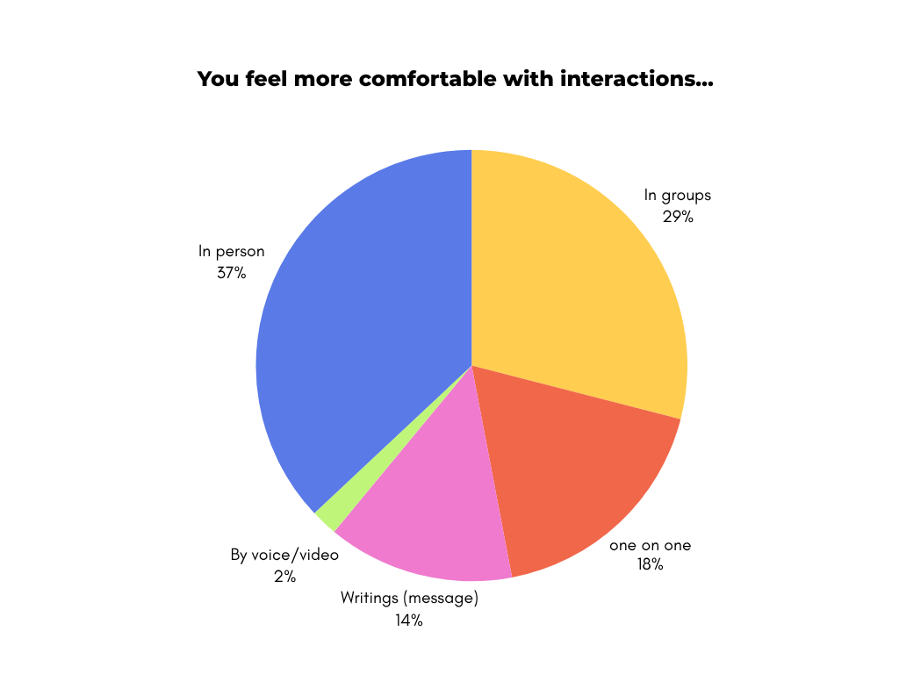
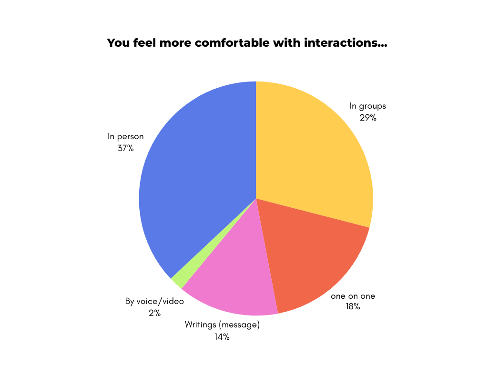

The overview
Ting is a hybrid wearable-app ecosystem designed to restore the intimacy of real-world encounters by translating physiological signals into haptic feedback. By monitoring biomarkers like heart rate and skin temperature, the device vibrates subtly upon proximity to emotionally compatible users, transforming the body into a relational interface that prioritizes physical presence over digital performance.
The problem
Gen Z faces a paralyzing pressure to perform. The reliance on visual-first dating apps exacerbates body image issues and social fatigue, creating a barrier to entry for face-to-face connection. The challenge was to create a solution that enables users to bypass the anxiety of 'breaking the ice' and the superficiality of profile curation, fostering connections that feel safe and physiologically aligned before a word is even spoken.
The goal
The goal was to design an embodied interaction tool that allows users to identify emotionally compatible people nearby without screen mediation. It aimed to validate the user's internal feelings through bio-data, creating a 'safe container' for spontaneous, real-world interactions grounded in intuition.

DESIGN PROCESS
Research and Project Definition
The first phase gathered extensive quantitative and qualitative data to understand the social barriers Gen Z faces. We conducted surveys with 93 participants and reviewed literature on affective computing and neurodesign. The focus was on understanding the gap between digital connection and emotional satisfaction.
Benchmarking revealed that existing tools either gamified attraction (Tinder, Bumble) or focused solely on productivity/safety (Life360), leaving a gap for embodied social tools.
Key Insights:
The Loneliness Paradox: According to Cigna (2020), 79% of Gen Z respondents report frequent feelings of loneliness, and 58% claim their social needs remain unmet despite high connectivity;
Rejection of Forced Interaction: 57% of users give up on social apps because interactions feel 'artificial or forced,' highlighting a desire for organic connection;
Safety in Physiology: According to Polyvagal Theory (Porges), the body detects safety through subtle physical cues; enabling the 'ventral vagal complex' is essential for reducing social defense mechanisms.
 

Development and Representation
Building on the research, this phase focused on developing the 'grammar' of the device. We decided to position the wearable on the upper spine to align with the vagus nerve, reinforcing the concept that 'the body senses it first.' We created a visual identity based on Paul Ekman's Atlas of Emotions, using a gradient of Blue (calm), Orange (activation), and Yellow (openness) to represent emotional states without using words. The interaction model was defined to be minimalist: the app acts only as a reflective log, while the wearable handles the real-time social 'radar.'
Key Outcomes:
Haptic Language Definition: We designed a specific vibration pattern — discreet enough not to demand action, but distinct enough to spark curiosity — acting as a 'whisper' rather than a notification;
Emotional AI Calibration: Defined the onboarding flow where users train their personal AI with behavioral data to ensure accurate compatibility matching;
Visual System: Developed a UI that avoids overstimulation, using soft color palettes and gradients to evoke regulation and calm rather than urgency.
Prototyping and Validation
Significant advancements in the final phase brought the Ting ecosystem to life. We developed high-fidelity mockups of the mobile application and 3D visualizations of the wearable device. Feedback highlighted that the absence of swiping and images relieved performance anxiety, validating the core hypothesis. We also refined the 'Match Tracking' feature, inspired by location safety tools, to allow users to meet spontaneously but safely once a haptic match was established.

Key Outcomes:
User Validation: Feedback confirmed the interface felt 'fluid, intuitive, and more human,' with users specifically praising the absence of swipes;
Reflective UX: The introduction of post-interaction reflection questions (e.g., "What kind of energy are you bringing?") helped users better understand their own emotional states;
Physical-Digital Bridge: The prototype successfully demonstrated how a physical sensation (vibration) could seamlessly transition into a digital confirmation (app) and back to a physical meeting.
Project Video
TAKEAWAYS
This project allowed me to delve deeply into Neuroresponsive Interaction Design, challenging the status quo of screen-centric socialization. By applying the Polyvagal Theory (Porges) to UX, I learned that the most powerful interface is often the human body itself.
The process highlighted the importance of 'Design for Absence' — creating technology that steps back to let human connection come forward. It demanded a rigorous balance between collecting sensitive physiological data and designing an experience that feels protective rather than invasive.
Through Ting, I understood that the future of social tech isn't about faster connections, but safer ones. It transformed my perspective on how we can use AI not to replace human intimacy, but to tune us back into the frequencies of real-world resonance.